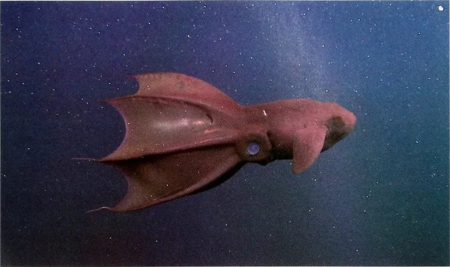

软体动物 · 动物界
吸血鬼乌贼 Vampyroteuthis infernalis

深海中的活化石，靠腕间薄膜像伞一样开合缓慢游动，能喷出发光黏液迷惑天敌，介于乌贼与章鱼之间。
- 分类
- 门软体动物门纲头足纲目幽灵蛸目科幽灵蛸科属幽灵蛸属
- 栖息环境
- 全球热带至温带深海六百至一千二百米的低氧水层
- 地理分布
- 全球热带至温带海域的深海，包括大西洋、太平洋和印度洋
- 保护级别
- 尚无保护级别；深海采矿与底层拖网为潜在威胁
物种志
吸血鬼乌贼并不是真正的乌贼，也不是章鱼，而是自成一眼的幽灵蛸类。成体外套膜长约十五厘米，身体呈暗红或紫黑色，八条腕之间由一层薄膜相连，展开时像一把撑开的伞，收缩时又能把身体完全包住。腕的内侧长着细小的刺状突起，遇到危险时它会把腕翻卷到身体上方，露出带刺的一面。它还能从腕尖喷出发光的黏液云，在黑暗中制造光幕掩护自己逃走。
它生活在全球热带至温带的深海，水深多在六百至一千二百米的缺氧水层，那里溶氧极低，它靠缓慢的新陈代谢和巨大的鳃维持生活。它的食物主要是海雪，也就是从上层沉降下来的有机碎屑、粪便和尸体碎块，偶尔捕食小型甲壳类。它行动缓慢，肌肉松软，几乎没有游泳能力，靠腕间薄膜的开合做缓慢升降。由于栖息在人类难以到达的深海，它的种群状况不明，尚无保护级别，深海采矿和底层拖网是潜在威胁。
形态与习性
- 食性以海雪和有机碎屑为主，偶食小型甲壳类
- 体长外套膜长约十五厘米，连腕全长约三十厘米
- 栖息深度多在六百至一千二百米的低氧水层
- 运动靠腕间薄膜开合缓慢升降，不擅长游泳
- 防御翻卷带刺的腕足，喷出发光黏液云
- 分类自成幽灵蛸目，介于乌贼与章鱼之间
趣味知识
- 吸血鬼乌贼的名字来自它暗红的体色和膜状的腕足，其实它既不吸血，也不属于乌贼。
- 它生活在溶氧极低的深海，代谢缓慢，靠吃从上层飘落的有机碎屑为生。
- 受惊时它会把腕足翻到头顶露出尖刺，同时喷出发光的黏液云掩护自己撤退。